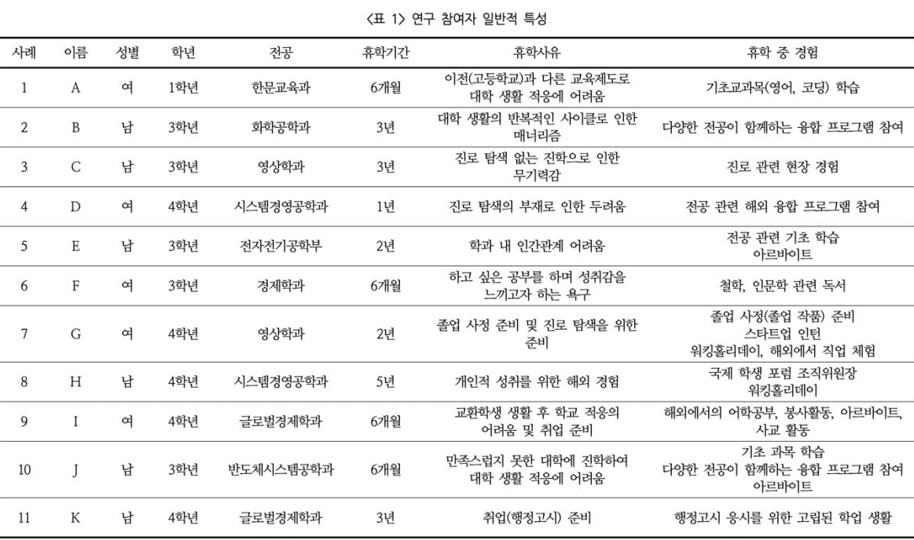

대학생 휴학 중 경험에 대한 사례연구
저자 백정은
발행일 2022년 5월 발행
대학생의 휴학 중 경험에 대한 사례연구
본 연구는 ‘휴학’이라는 새로운 환경에서 대학생들이 경험한 다양한 활동을 살펴보고, 학생발달 관점에서 그러한 경험이 학생들의 성장과 발달에 어떠한 영향을 미치는지를 탐색하고자 하였다. 서울 소재 4년제 A대학에 재학 중인 휴학 경험이 있는 학생 11명을 대상으로 면담을 수행하였다. 면담 내용을 모두 전사한 후, 주제 분석 방법을 적용하여 분석하였다. 연구 결과, 대학생들은 휴학 중 지적, 사회적, 자기 성찰적 경험을 한다. 구체적으로 지적 경험은 ‘자기주도 학습과 몰입’, ‘현장 체험과 진로 성숙’, ‘개별화 학습 경험과 긍정적 학업정서’ 등이었다.
지적 경험은 학생들의 진로 가치관을 확립하고 진로성숙도에 영향을 미치는 것으로 나타났다. 사회적 경험은 ‘다양성 이해와 개방적 태도를 길렀던 인적 교류’, ‘삶에 대한 가치관과 진로를 바꿔준 문화접변 경험’, 현장 전문가 교류와 진로 탐색’, ‘큰 조직 리더 경험과 자기효능감’이다. 이러한 경험을 통해 학생들은 사고를 확장하고 타인에 대한 이해가 높아지는 등 가치관이 재정립된 것을 확인할 수 있었다. 자기 성찰적 경험은 ‘무기력을 떨치고 도전해 본 경험과 작은 성취’, ‘도전적 해외 경험과 성숙한 자아개념’, ‘나를 되돌아본 시간과 내면적 성숙’ 등이 있다. 자기 성찰적 경험은 학생들 자신에 대한 성찰과 이해하는 과정을 통해 내적 성숙을 촉진하고 있었다.
그 동안 휴학을 한다는 것은 정상적인 경로에서 일탈하는 것으로 인식되었다. 그러나 본 연구는 휴학을 학생들에게 대학 캠퍼스라는 제한적 공간에서 정규수업을 중심으로 교수, 교우 등 특정한 사람들과 교류하는 일상적인 환경에서 벗어나, 교육적 경험을 제공하는 색다른 환경이 될 수도 있다는 관점으로 바라보았다. 즉 학생들은 휴학을 통해 시간적 여유를 갖고, 학점 압박에서 벗어나 심리적 자유와 안정을 느끼면서, 학습할 내용과 장소를 폭넓은 선택할 자기 주도성이 커진다는 것이다.
본 연구의 결과를 요약하면 다음과 같다. 첫째, 학생들은 휴학을 하면서 삶과 연계 된 지식을 자기 주도적으로 학습하는 경험을 할 수 있었다. 결국 이러한 경험은 내재적 학습 동기, 자기 주도성, 자신에 대한 이해, 긍정적 학업정서를 키우고, Super(1953)의 진로 이론이 제시한 것처럼 ‘진로 성숙(career maturity) 으로 이어진다. 둘째, 학생들은 휴학하는 동안 교수, 직원, 친구가 아닌 다양한 사람들을 의도적으로 만나면서 보 다 풍부한 인간관계를 형성하였다. 캠퍼스에서 벗어나 현장 전문가와 했던 풍부한 상호작용은 학생의 진로성숙에 기여했다는 점에 서 의미를 찾을 수 있다. 마지막으로 학생들은 휴학 기간을 활용해서 자신을 되돌아보는 경험을 했다. 학생들은 혼자만의 시간을 가지면서 사색하고 나를 더욱 깊숙이 들여다봤다고 했다. 특히 재학 중 경험한 심리적 소진 (burnout) 때문에 휴학을 선택했던 학생들은 휴학 중에 자신이 끝까지 완수할 수 있는 일들에 도전 하면서 작은 성취를 경험하고 이를 통해 자신감을 회복하는 모습을 보였다. 넷째, 본 연구 결과를 통해 대학생들이 휴학 중 지적 경험이 그들의 정서적, 학문적 성장으로 이어졌다는 것을 확인할 수 있었다. 이러한 시간은 여러 경험을 통해 얻은 것들을 자신만의 것으로 만들고 자아를 돌아보는 시간을 가지면서 내면적으로 성숙할 수 있는 계기가 되었다.
본 연구가 학업과 대학생활 면에서 주는 시사점은 다음과 같다. 첫째, 전통적으로 휴학이라는 것 은 학업 중단, 궤도 이탈, 대학 부적응과 같이 부정적인 의미로 여겨졌다. 그러나 휴학은 새로운 지적, 인간적 환경과 심리적, 정서적 여유를 제공한다는 면에서 이것이 학생의 성장과 발달에 어떠한 의미를 가지는 새롭게 조명해볼 필 요가 있다. 둘째, 휴학 중 다양한 경험을 하고, 돌아온 학생들을 위한 교육적, 제도적 지원이 필요하다. 앞서 설명한 바와 같이, 학생들은 휴학 중 다채로운 경험을 통해 변화를 이룬다. 그러나 복학한 후에는 학교라는 다른 새로운 환경과 마주하게 된다. 대학들은 학생들이 휴학 동안 가졌던 긍정적인 경험이 더욱 꽃피울 수 있도록 지원하고, 복학에 따른 애로 사항을 청취하고 대학 적응을 도와주는 프로그램을 마련할 필요가 있다. 셋째, 본 연구는 휴학이 학생의 성장과 재도약을 위한 기간이 될 수 있음을 보여주었다. 이는 학생 들이 휴학이라는 비정형화 된 환경과 상호작용하며 얻은 성취이다. 대학에서는 학생들의 학습을 촉진시킬 수 있는 유의미한 학습 경험을 제공해야 한다.
본 연구의 한계는 다음과 같다. 첫째, 본 연구는 질적 연구가 일반적으로 가지고 있는 일반화의 한계가 있다. 본 연구는 11명 학생들을 대상으로 그들의 휴학 경험과 그것이 미친 영향에 대해 살펴 보았다. 또한 연구 참여 자가 모두 동일한 대학에 재학 중이라는 점에서, 본 연구의 결과는 사례 대학에 내포된 집합적 특성 을 반영한 것일 수도 있다. 둘째, 본 연구는 학생 발달의 관점에서 휴학 중 경험을 살펴보았다. 따라서 연 구 결과가 휴학의 긍정적인 효과만 부각되어 보일 수 있다. 그러나 본 연구는 휴학의 효과를 탐색하 기 보다는 휴학생이 늘어나고 있는 시점에서 그들의 경험을 이해하고, 기존 선행 연구와 다른 관점 에서 교육적 가치를 탐색하고자 하였다. 후속 연구는 다양한 관점에서 학생들이 휴학을 하는 이유, 휴학 중 당면하는 이슈와 경험들을 심층적으로 살펴보고 휴학이 가지는 의미를 탐색해 볼 필요가 있다.